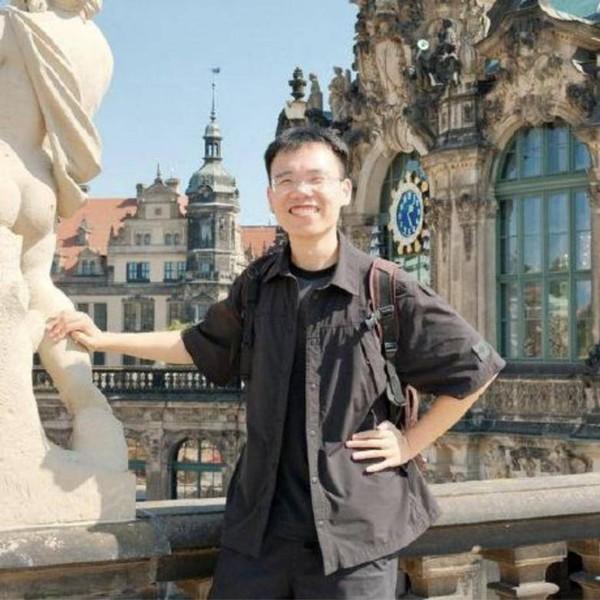
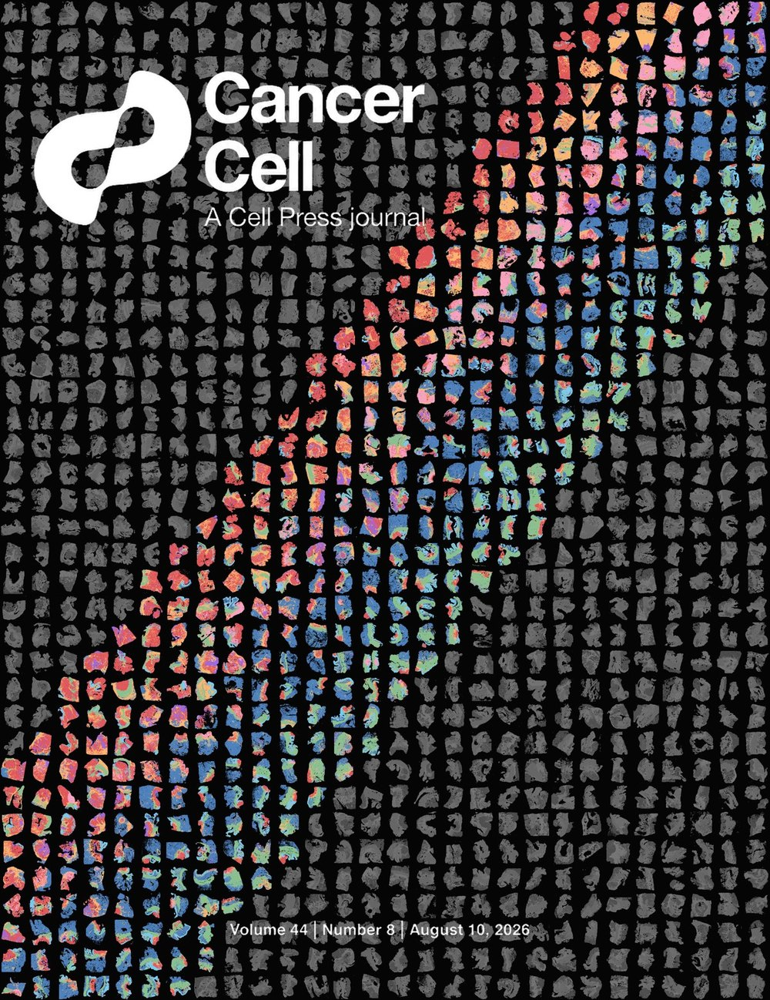
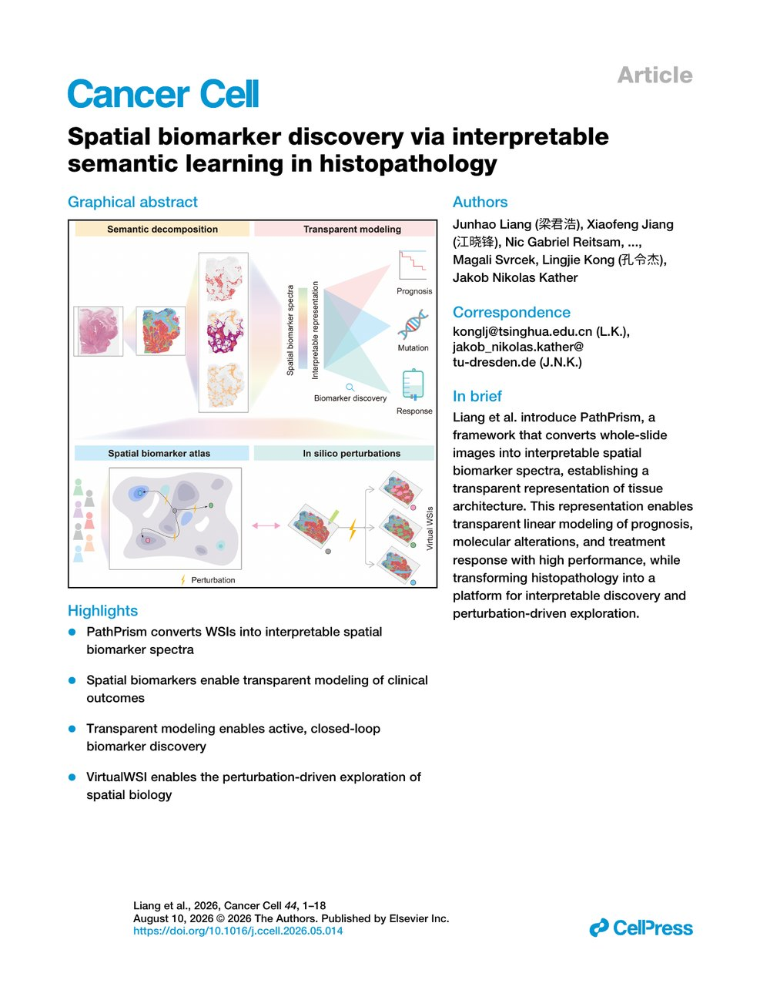
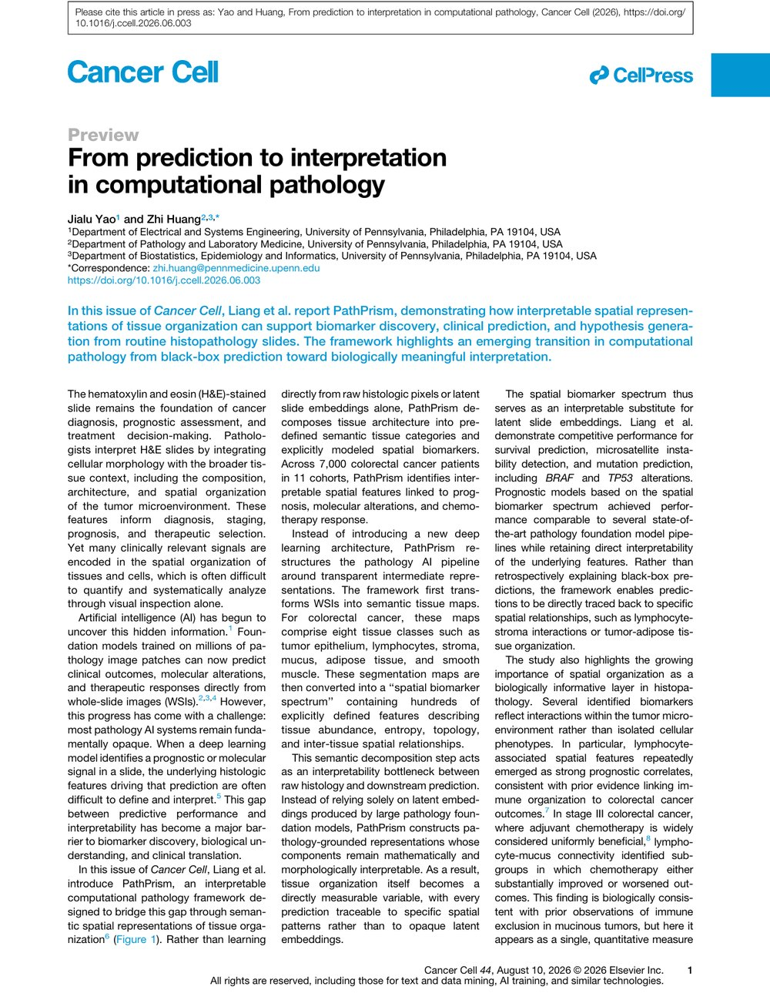
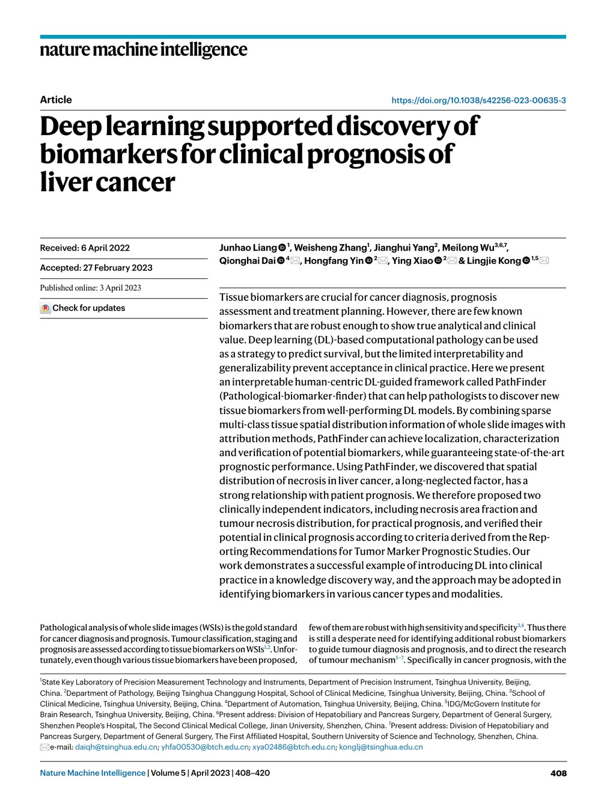
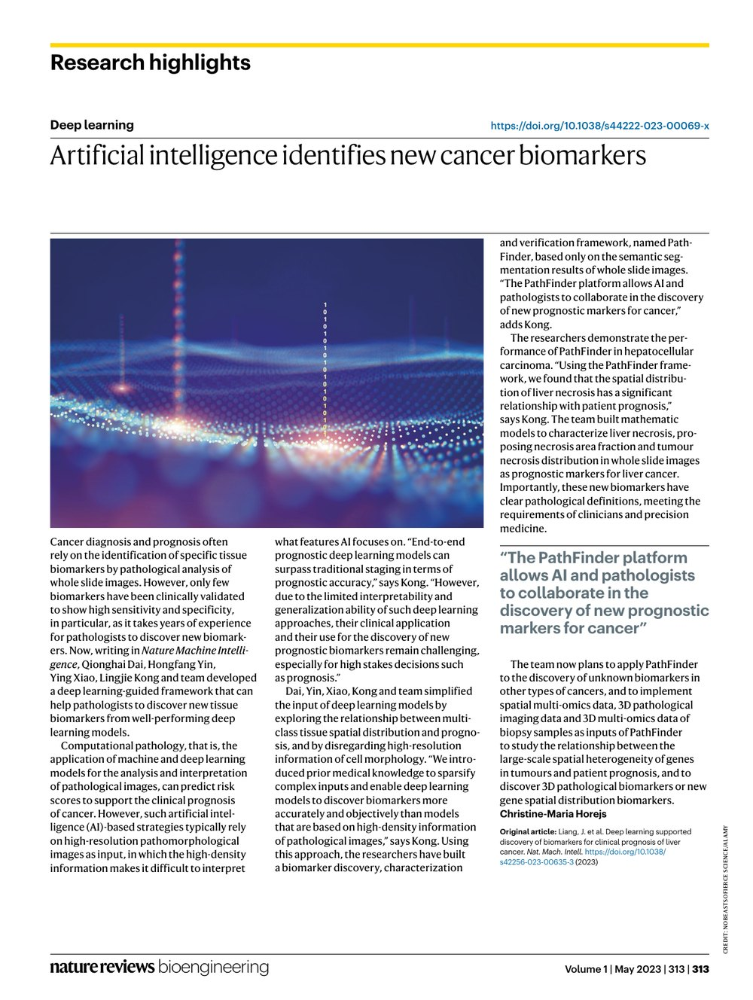
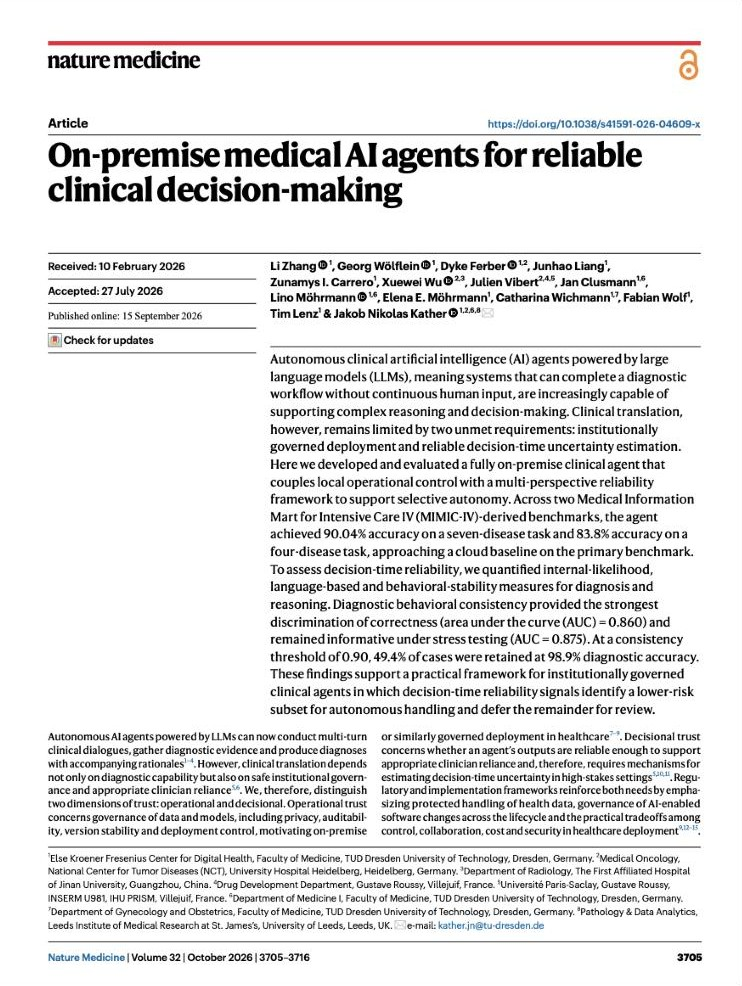
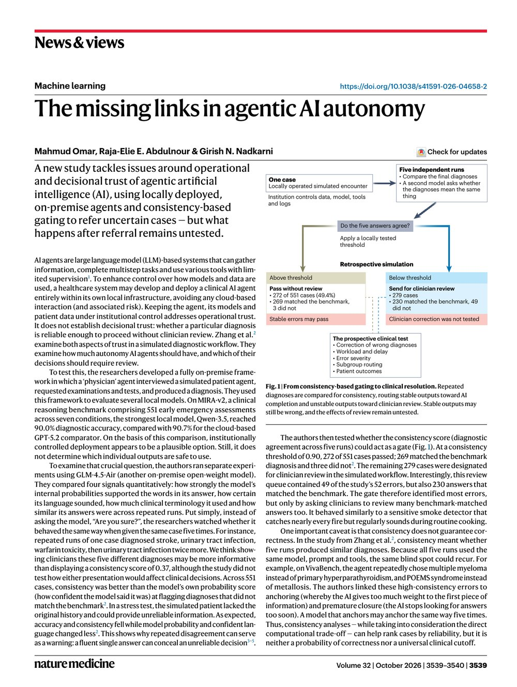
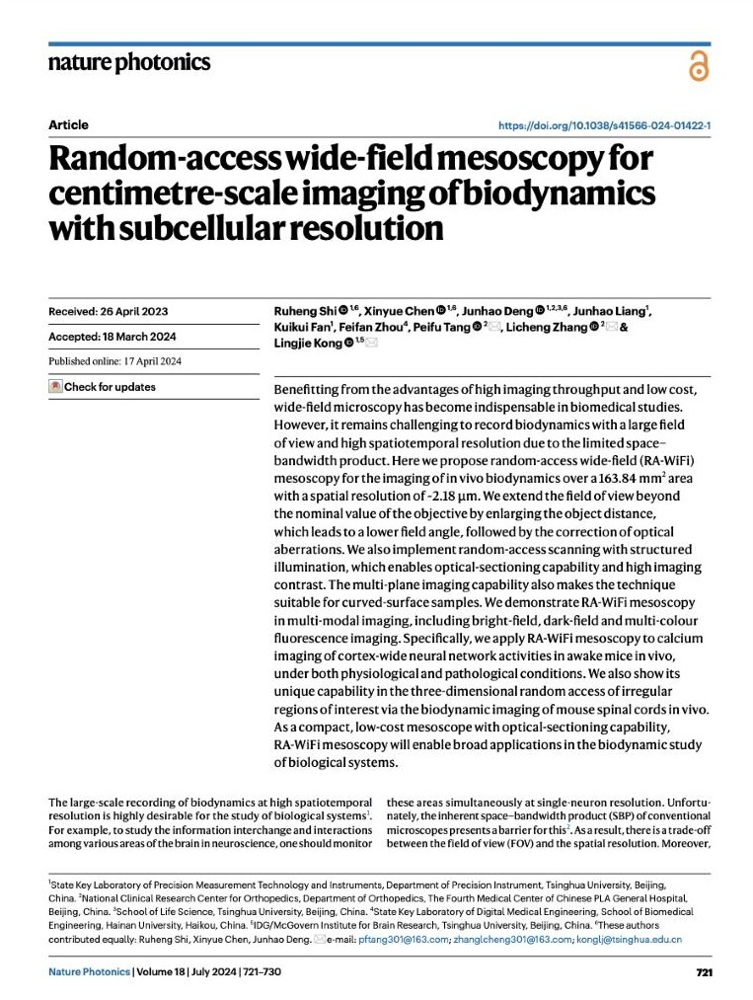

Hello! I'm Junhao. I am a postdoctoral researcher in the KatherLab at the Institute for Medical AI (IMAI), Heidelberg University Hospital. I received my Ph.D. from Tsinghua University.
I am passionate about AI for science. In particular, I am interested in how AI can drive scientific discovery that genuinely expands the frontiers of what we know, generating interpretable, quantifiable and verifiable knowledge at scale, and in how such knowledge can be validated and applied in the real world, so that it keeps evolving as it is put to use.
My current research focuses on computational pathology and computational optics, which serve as ideal sandboxes for exploring these ideas within the broader landscape of AI for science. Ultimately, I hope to translate these discoveries into tangible benefits for patients and to advance our understanding of nature and of ourselves.
News:
- 2026/09: On-premise medical AI agents for reliable clinical decision-making was published in Nature Medicine.
- 2026/08: PathPrism was selected as a Featured Article and the Cover Story of the August issue of Cancer Cell.
- 2026/06: PathPrism was featured in a Cancer Cell Preview, From prediction to interpretation in computational pathology.
- 2026/06: Our work on spatial biomarker discovery through interpretable semantic learning (PathPrism) was published in Cancer Cell.
- 2024/04: Honored to win the best poster award at the ‘Advancing Health with AI’ Nature Conference held in Wenzhou.
- 2024/03: Our work on wide-field mesoscopy (RA-WiFi) was published in Nature Photonics.
- 2023/04: PathFinder was Highlighted in Nature Reviews Bioengineering.
- 2023/04: Our work on discovering new pathological markers through human-AI collaboration (PathFinder) was published in Nature Machine Intelligence.
Publications
* equal contribution
-

Cover story 
Article 
Preview Cover story · Article · Preview
Spatial Biomarker Discovery via Interpretable Semantic Learning in Histopathology
Cancer Cell, 2026
TLDR: PathPrism turns whole-slide images into interpretable spatial biomarker spectra that describe tissue architecture. These spectra support transparent, linear modeling of prognosis, molecular alterations and treatment response, closed-loop biomarker discovery, and perturbation-driven exploration of spatial biology in silico with VirtualWSI.
- Cover Story and Featured Article of the August 2026 issue of Cancer Cell
- Featured in a Cancer Cell Preview: From prediction to interpretation in computational pathology
-

Article 
Research highlight Article · Research highlight
Deep Learning Supported Discovery of Biomarkers for Clinical Prognosis of Liver Cancer
Nature Machine Intelligence, 2023
TLDR: Deep learning models predict survival well but are hard to trust in the clinic. PathFinder is a human-centric framework that helps pathologists discover new tissue biomarkers from well-performing models; with it we found that the spatial distribution of necrosis in liver cancer is strongly linked to prognosis, and proposed two clinically independent indicators.
- Highlighted in Nature Reviews Bioengineering: Artificial intelligence identifies new cancer biomarkers
-

Article 
News & Views Article · News & Views
On-Premise Medical AI Agents for Reliable Clinical Decision-Making
Nature Medicine, 2026
TLDR: A fully on-premise clinical LLM agent paired with a multi-perspective reliability framework. Decision-time reliability signals pick out a lower-risk subset of cases that the agent can handle on its own, and defer the rest for review.
- Featured in a Nature Medicine News & Views: The missing links in agentic AI autonomy
-

Article Nature Photonics, 2024
TLDR: RA-WiFi mesoscopy images in vivo biodynamics over a 163.84 mm² field of view at ~2.18 µm resolution, with random-access structured illumination for optical sectioning and multi-plane imaging of curved samples. We use it for cortex-wide calcium imaging in awake mice and imaging of mouse spinal cords in vivo.
- Highlighted in Laser Focus World: Random-access Wi-Fi mesoscope enables flexible in vivo biodynamics imaging
Preprints
-
Towards a General-Purpose Foundation Model for Signal Extraction in Calcium Imaging of Neuronal Network Activities
Under minor revision at Nature Methods · Conference version at the European Conference on Biomedical Optics (ECBO), 2025 (W2C.3)
-
Under review at Science Advances · bioRxiv, 2026
Services
- Assisted in reviewing manuscripts in Nature Machine Intelligence, Nature Cell Biology, Nature Communications, BMJ Digital Health, Journal of Hepatology, npj Precision Oncology, Cancer Medicine.